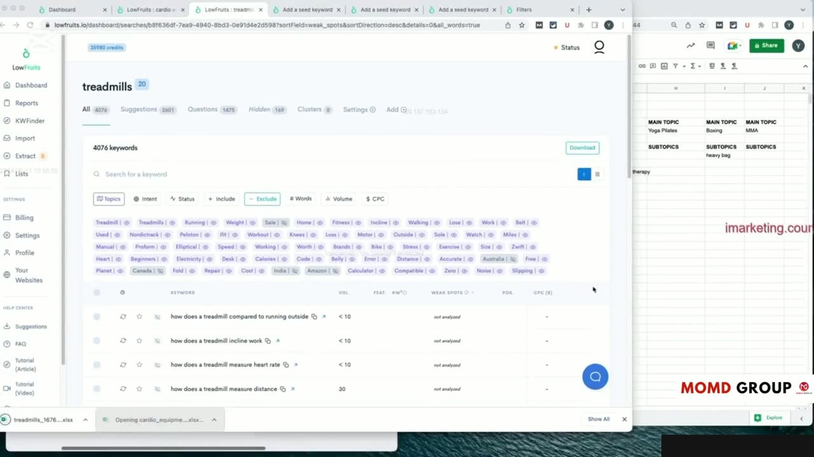
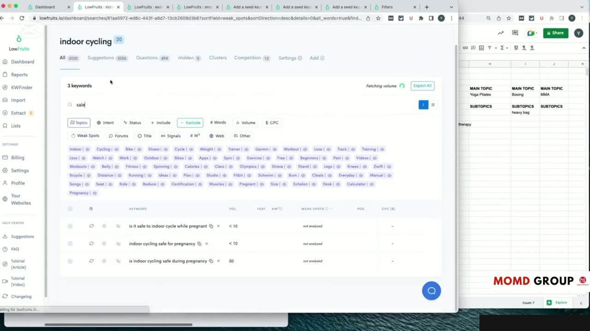
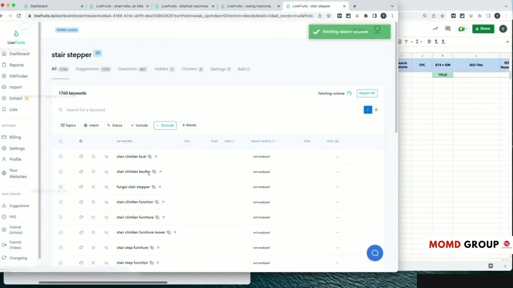
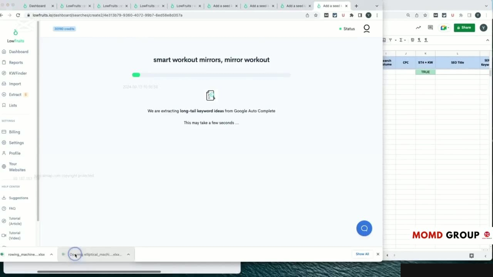

Practical Case Study: Competitor Gap Analysis & Keyword Expansion
Phương pháp Phân tích Khoảng trống Nội dung Nâng cao
Bài thực hành thứ 5 tập trung vào kỹ thuật: Phân tích khoảng trống đối thủ và mở rộng từ khóa nâng cao (video dài 23 phút).
Yoyao hướng dẫn cách đưa đồng thời 3 tên miền của đối thủ vào công cụ Content Gap:
- Lọc những từ khóa mà cả 3 đối thủ đều nằm trong Top 10 Google. Đây chính là những "chủ đề bắt buộc phải có" (Must-have Topics) để Google công nhận trang web của bạn có chuyên môn trong ngành.
- Phát hiện những từ khóa có độ khó thấp (KD < 10) mà đối thủ viết bài sơ sài nhưng vẫn có thứ hạng cao. Đây là những cơ hội vàng để vượt mặt đối thủ trong thời gian ngắn nhất.
Phương pháp này giúp lấp đầy hoàn toàn các lỗ hổng kiến thức trên website của bạn.

Khai thác Từ khóa Câu hỏi từ Diễn đàn và Google PAA
Để tăng cường tính hữu ích thực tế của bài viết, Yoyao khai thác sâu vào các nguồn câu hỏi từ cộng đồng:
Trích xuất hàng trăm câu hỏi thực tế của người dùng từ hộp People Also Ask (PAA) của Google, diễn đàn Reddit và Quora. Những câu hỏi này được tích hợp trực tiếp vào mục FAQ của các bài viết hoặc tạo thành các bài viết giải đáp ngắn riêng biệt.
Điều này giúp website đáp ứng hoàn hảo tiêu chí Helpful Content của Google và dễ dàng giành vị trí Featured Snippet.

Lọc Bỏ Từ khóa Rác và Từ khóa Không Phù hợp Ý định
Một bước kiểm soát chất lượng quan trọng được Yoyao nhấn mạnh là việc thanh lọc từ khóa rác:
- Loại bỏ các từ khóa chứa tên thương hiệu đối thủ độc quyền hoặc các sản phẩm đã ngừng kinh doanh.
- Loại bỏ các từ khóa có ý định tìm kiếm tìm việc làm, hình ảnh miễn phí hoặc nội dung không mang lại giá trị chuyển đổi.
- Đảm bảo mọi từ khóa giữ lại đều phục vụ cho mục tiêu kinh doanh và thẩm quyền của website.
Giữ cho danh sách từ khóa luôn tinh gọn giúp tiết kiệm đáng kể ngân sách sản xuất nội dung.

Tích hợp Dữ liệu Mở rộng vào Bản đồ Trung tâm
Các từ khóa mở rộng sau khi phân tích được cập nhật liền mạch vào bảng Topical Map chính.
Việc liên tục cập nhật này biến Topical Map thành một tài sản doanh nghiệp vô giá, gia tăng giá trị theo thời gian và luôn đi trước các đối thủ cạnh tranh.

Nguồn và đối chiếu
- Topical Maps Unlocked 2.0 · 11-From Theory to Practice Module/video 3.mp4 (Video bài học chính).
- Bản tiếng Anh không có video riêng cho bài học này; nội dung đối chiếu trực tiếp từ slide và video chính.